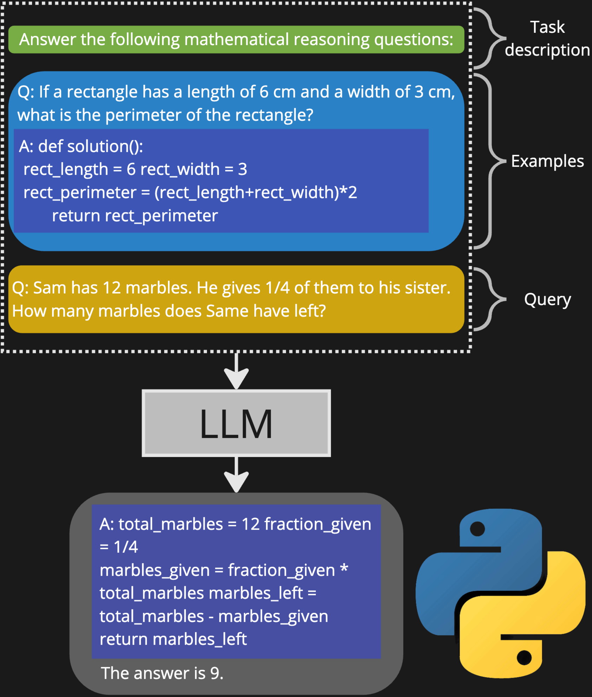

<!-- .element: style="width: 20%;" --> # Exploring LLM abilities ## A deep dive into LLMs Andrea Matarazzo <!-- .element: style="font-size: 0.4em; margin-top: 2em" --> A.A. 2023/2024 <!-- .element: style="font-size: 0.3em" --> --- # Models evolution  Large Language Models (LLMs) 10B parameters --- <!-- .slide: data-background-image="./imgs/llm.png" data-background-size="80%" data-background-opacity="0.2" --> # Tasks Text generation <!-- .element: class="fragment semi-fade-out" data-fragment-index="1" --> <div class="fragment fade-in" data-fragment-index="1"> Translation <!-- .element: class="fragment grow" data-fragment-index="2" --> Question answering <!-- .element: class="fragment grow" data-fragment-index="2" --> Summarization <!-- .element: class="fragment grow" data-fragment-index="2" --> Sentiment analysis <!-- .element: class="fragment grow" data-fragment-index="2" --> Reasoning <!-- .element: class="fragment grow" data-fragment-index="2" --> Planning <!-- .element: class="fragment grow" data-fragment-index="2" --> </div> --- # LLM adaptation <div class="r-stack"> <div class="fragment fade-out" data-fragment-index="0">  </div> <div class="fragment current-visible" data-fragment-index="0"> ## Training The foundation for the power of LLMs *** - Large corpus with mixed data (web pages, books, code, etc.) - Costly and time-consuming - Models good at understanding and generating language </div> <div class="fragment current-visible" data-fragment-index="1"> ## Fine-tuning The process of adjusting the parameters of a pre-trained large language model to a specific task or domain without the need to train a model from scratch *** - billions of parameters are expensive to tune - it can improve model performance - it may leads to loss of generalization capabilities </div> <div class="fragment" data-fragment-index="2">  </div> </div> --- # LLM architecture <div class="r-stack"> <div class="fragment fade-out" data-fragment-index="0">  <!-- .element: style="width: 75%;" --> Transformer - Encoder/Decoder [Vaswani et al. 2017] </div> <div class="fragment current-visible" style="display:flex; align-items: center; text-align: justify;" data-fragment-index="0">  <div> ### Encoder - transforms an input sequence into embeddings - capture text semantic and syntactic properties </div> </div> <div class="fragment current-visible" style="display:flex; align-items: center; text-align: justify;" data-fragment-index="1">  <div> ### Decoder - turns the embedding back into a text output - translation task: the translated version of the input text </div> </div> <div class="fragment" style="display:flex; align-items: center; text-align: justify;" data-fragment-index="2">  <div> ### Multi-head self-attention mechanism - "focus attention" on different parts of the sentence - parallel processing - scale adding attention layers </div> </div> --- # Scaling laws <div class="r-stack"> <div class="fragment fade-out" data-fragment-index="0"> ## KM (OpenAI) `\[\begin{aligned} L(N) & =(\frac{N_c}{N})^{\alpha_N}, \alpha_N \approx 0.076, N_c \approx 8.8 \times 10^{13} \\ L(D) & =(\frac{D_c}{D})^{\alpha_D}, \alpha_D \approx 0.095, D_c \approx 5.4 \times 10^{13} \\ L(C) & =(\frac{C_c}{C})^{\alpha_C}, \alpha_C \approx 0.050, C_c \approx 3.1 \times 10^8 \end{aligned} \]` </div> <div class="fragment" data-fragment-index="0"> ## Chinchilla (Google) `\[ L(N,D) = E + \frac{A}{N^\alpha} + \frac{B}{D^\beta} \]` </div> </div> --- # Scaling laws - Relationship between model size, data size, and compute budget - Optimal allocation of compute budget to model size and data size - Model size and performance relationship --- # Emergent abilities <div class="r-stack"> <div class="fragment fade-out" data-fragment-index="0">  "Emergence is when quantitative changes in a system result in qualitative changes in behavior" <!-- .element: style="font-style: italic; font-size: 0.5em" --> </div> <div class="fragment current-visible" style="display:flex" data-fragment-index="0"> <img src="./imgs/icl.png" style="width: 500px;" /> - In-Context Learning (ICL) <!-- .element: class="fragment highlight-current-blue" data-fragment-index="0" --> - Chain of Thought (CoT) - Program of Thought (PoT) - Planning </div> <div class="fragment current-visible" style="display:flex" data-fragment-index="1"> - In-Context Learning (ICL) - Chain of Thought (CoT) <!-- .element: class="fragment highlight-current-blue" data-fragment-index="1" --> - Program of Thought (PoT) - Planning </div> <div class="fragment current-visible" style="display:flex" data-fragment-index="2">  - In-Context Learning (ICL) - Chain of Thought (CoT) - Program of Thought (PoT) <!-- .element: class="fragment highlight-current-blue" data-fragment-index="2" --> - Planning </div> <div class="fragment" style="display:flex" data-fragment-index="3"> <img src="./imgs/planning.png" style="width: 500px;" /> - In-Context Learning (ICL) - Chain of Thought (CoT) - Program of Thought (PoT) - Planning <!-- .element: class="fragment highlight-current-blue" data-fragment-index="3" --> </div> </div> --- # Chain of Thought Where this ability comes from? *** - Model size? - Instruction tuning? - Pre-training corpora? - Hypothesized to be elicited by training on **code** --- # Experiments - LLaMA models - Same architecture - Same model size (7B) - Different code % in pre-training corpora - GSM8k and GSM-hard datasets - Math word problems --- # Results ## CoT performance GSM8k <div style="height:470px"> <canvas data-chart="line"> <!-- { "data": { "labels": ["LLaMA2 7B", "Code LLaMA 7B", "LLaMA2 13B", "LLaMA3 7B", "LLaMA3.1 7B" ], "datasets":[ { "data":[3.1,3.99,10.53,31,75.9], "label":"0-shot","backgroundColor":"white" }, { "data":[15.7, 16.3, 35.8, 47, 80.9], "label":"5-shot", "backgroundColor":"white" } ] } } --> </div> </canvas> --- # Results CoT is elicited by training on code *** <div style="display: flex;"> <div style="height:470px; width: 500px"> <canvas data-chart="line"> <!-- { "data": { "labels": ["LLaMA2 7B", "Code LLaMA 7B", "LLaMA2 13B", "LLaMA3 7B", "LLaMA3.1 7B" ], "datasets":[ { "data":[3.1,3.99,10.53,31,75.9], "label":"0-shot","backgroundColor":"white" }, { "data":[15.7, 16.3, 35.8, 47, 80.9], "label":"5-shot", "backgroundColor":"white" } ] } } --> </canvas> </div> <div> - code-davinci-002 vs text-davinci-002 <!-- .element: style="font-size: 0.8em" --> - model size is not a deciding factor <!-- .element: style="font-size: 0.8em" --> - ...but it improves performance <!-- .element: style="font-size: 0.6em" --> - instruction tuning is not a deciding factor <!-- .element: style="font-size: 0.8em" --> - Code LLaMA (fine-tuned) is not better than LLaMA2 <!-- .element: style="font-size: 0.6em" --> - same architecture <!-- .element: style="font-size: 0.8em" --> - LLaMA 3.x does not significantly deviate from LLaMA 2 <!-- .element: style="font-size: 0.6em" --> </div> </div> --- # Results ## CoT performance GSM-hard <div style="height:470px"> <canvas data-chart="line"> <!-- { "data": { "labels": ["LLaMA2 7B", "Code LLaMA 7B", "LLaMA2 13B", "LLaMA3 7B", "LLaMA3.1 7B" ], "datasets":[ { "data":[0, 1.30, 0, 5.4, 7.85], "label":"0-shot","backgroundColor":"white" }, { "data":[0, 1.5, 0, 7.4, 9.64], "label":"5-shot", "backgroundColor":"white" } ] } } --> </canvas> </div> --- # Results LLMs cannot reason *** <div style="display: flex;"> <div style="height:470px; width:400px;"> <canvas data-chart="line"> <!-- { "data": { "labels": ["LLaMA2 7B", "Code LLaMA 7B", "LLaMA2 13B", "LLaMA3 7B", "LLaMA3.1 7B" ], "datasets":[ { "data":[0, 1.30, 0, 5.4, 7.85], "label":"0-shot","backgroundColor":"white" }, { "data":[0, 1.5, 0, 7.4, 9.64], "label":"5-shot", "backgroundColor":"white" } ] } } --> </canvas> </div> <div> - LLMs learn to do Bayesian inference during pre-training <!-- .element: style="font-size: 0.9em" --> - ...related to data distributional properties (no big numbers) <!-- .element: style="font-size: 0.6em" --> - ...next token likelihood conditioned on the input sequence (text and code instructions) <!-- .element: style="font-size: 0.6em" --> </div> </div> --- # Results ## PoT performance GSM-hard <div style="height:470px"> <canvas data-chart="line"> <!-- { "data": { "labels": ["LLaMA2 7B", "Code LLaMA 7B", "LLaMA2 13B", "LLaMA3 7B", "LLaMA3.1 7B" ], "datasets":[ { "data":[0, 1.30, 0, 5.4, 7.85], "label":"0-shot","backgroundColor":"white" }, { "data":[16.69, 27.6, 36, 56.1, 62.36], "label":"5-shot", "backgroundColor":"white" } ] } } --> </canvas> </div> --- # Results LLMs cannot plan *** <div style="display: flex;"> <div style="height:470px; width:400px;"> <canvas data-chart="line"> <!-- { "data": { "labels": ["LLaMA2 7B", "Code LLaMA 7B", "LLaMA2 13B", "LLaMA3 7B", "LLaMA3.1 7B" ], "datasets":[ { "data":[0, 1.30, 0, 5.4, 7.85], "label":"0-shot","backgroundColor":"white" }, { "data":[0, 1.5, 0, 7.4, 9.64], "label":"5-shot", "backgroundColor":"white" } ] } } --> </canvas> </div> <div> - External solvers and verifiers improve performance <!-- .element: style="font-size: 0.8em" --> - Good at code generation <!-- .element: style="font-size: 0.8em" --> - high quality code data in the pre-training corpora (GitHub) <!-- .element: style="font-size: 0.6em" --> - code history (bugfixes and improvements) <!-- .element: style="font-size: 0.6em" --> - Poor at planning <!-- .element: style="font-size: 0.8em" --> - Struggle with self-verification (cannot improve themselves) <!-- .element: style="font-size: 0.6em" --> - Inexperienced problem solvers <!-- .element: style="font-size: 0.6em" --> </div> </div> --- ## Limiti e prospettive